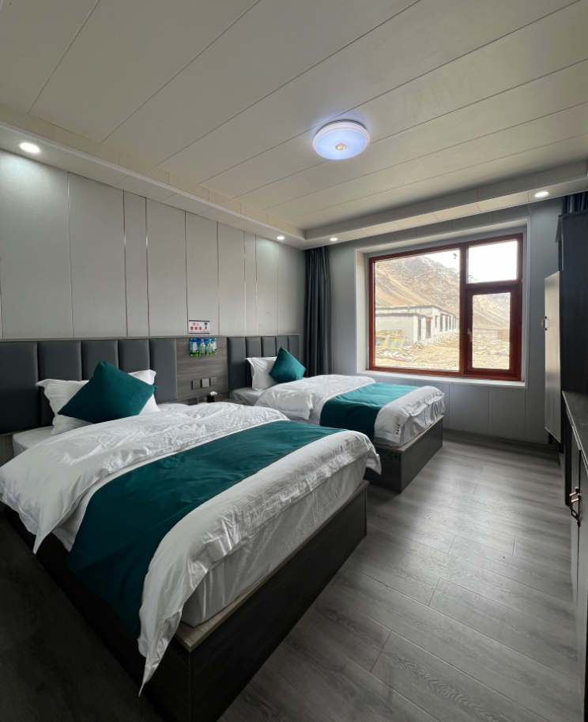
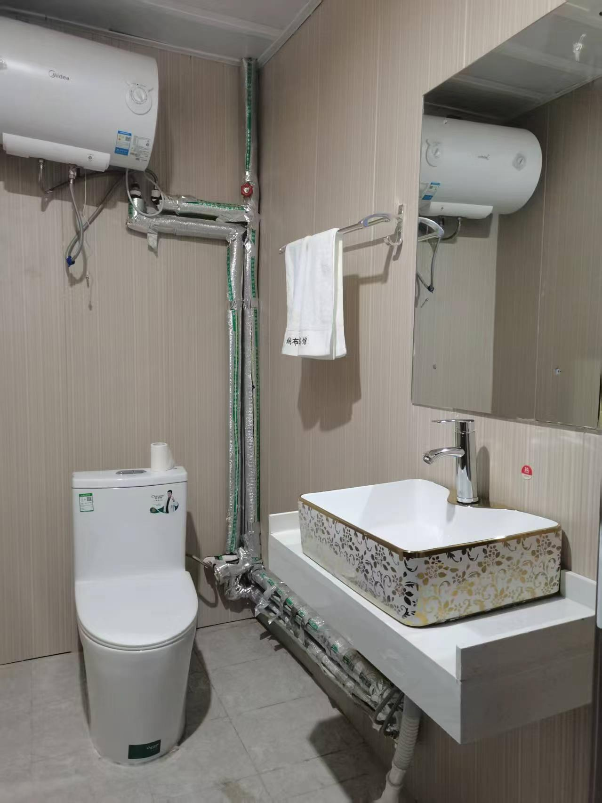

绒布旅馆照片更新验收
2026-10-16 · 真实会话核对、配置更新、生产复核
已上线。含绒布旅馆的三条线路统一使用新客房照与卫浴照；相关回归 93 项通过，生产素材解析复核通过。
真实会话证据
截图对应 Chatwoot #343 · 翠璧 蔡，共读取 26 条会话消息。客户原话是“西藏精華-8天 拉薩+珠峰”，实际接待线路为 tibet_essence_8d。系统发出“珠峰那晚安排供氧絨布旅館，有獨立衛浴喔～”后，发送了截图中的旧双床房照片。
旧照片消息 ID：925249972；素材键：tibet_essence_8d_rongbuk。8 天和 10 天素材文件哈希相同，确认使用同一张旧照。11 日原客房照与本次提供的客房照逐字节相同，只需要新增卫浴照。
适用线路
| 线路 | 本次修改 | 结果 |
|---|
| 西藏精华 8 天 · 拉萨＋珠峰 | 旧客房照替换为新照，并补上卫浴照 | 已生效 |
| 西藏全览 10 天 · 林芝＋拉萨＋珠峰 | 旧客房照替换为新照，并补上卫浴照 | 已生效 |
| 桃花＋珠峰 11 日 | 沿用与本次相同的客房照，并补上卫浴照 | 已生效 |
| 桃花 9 日 | 不上珠峰，继续排除绒布旅馆照片 | 已核对 |
| 冬季珠峰小镇替代住宿 | 保留冬季绒布关闭与替代线路推荐逻辑，不以这组照片代表冬季住宿 | 已核对 |
生效的两张原图

客房照 · 744 × 914 · 原图未修改

卫浴照 · 1279 × 1706 · 原图未修改
验收结论
- 三条线路首轮介绍分别解析出客房、卫浴两张图，文件哈希与用户提供的原图一致。
- 住宿追问与跟进回复的素材选择能解析同一对图片；11 日住宿固定答复的图片引用同步更新。
- 未发送草稿支持切换至新图；已发送历史保持原样，不重复补发。发布时没有需要迁移的旧图草稿。
- 重复执行配置不新增媒体、不重复归档、不追加重复图片。
- 其他线路设置、报价、全局接待配置和已发消息均未变更。三个服务健康检查通过。
测试包括生产数据库副本预检、重复配置检查、素材解析与图文计划验证，以及 93 项线路内容/近期业务/季节规则回归。没有向 #343 或其他客户发送测试图片；本次模型调用 0 次。
发布备份：/opt/china2go-ai/backups/rongbuk-photos-20261016-20261016T035718Z。
证据：生产复核结果 · 93 项回归日志 · 隔离预检 · 素材发布清单